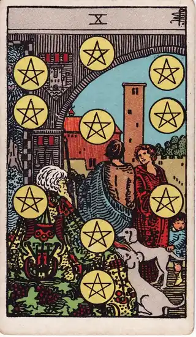
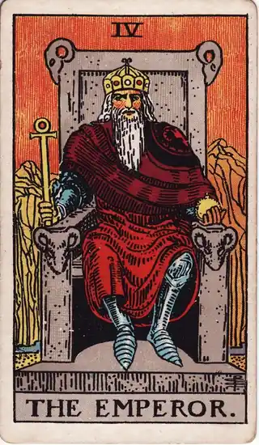
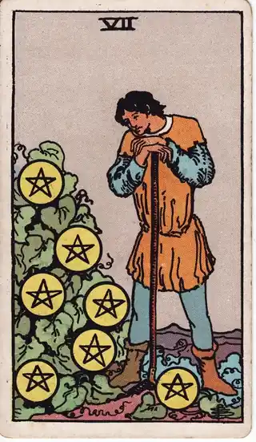

READING
家を買うか迷ったとき、決め方を間違えないために
・ DECIDE. 編集部

モデルルームのソファに座った瞬間、「ここで暮らす自分」が急に具体的になってしまった。収納の多さ、駅からの近さ、営業の人の「今月なら、この条件で」という言葉。ところが帰り道、35年というローンの長さがふと頭に戻ってきて、気持ちが大きく揺れる。家は人生でいちばん大きな買い物です。迷って当然で、迷わずに決めてしまうほうが危ないくらいです。
先に言っておくと、このページのゴールは「買い時を見極めること」ではありません。ゴールは、「自分の暮らしとお金に、この家が合っているか」で決められるようになることです。価格の予測は専門家でも外しますが、自分の条件を知っているのは自分だけです。その条件で決めた家は、あとから値動きに振り回されません。
POINT 01 決め方を間違えないために、総額と月額で見る
まず数字を置きます。物件価格4,000万円を、頭金なし・35年ローン・金利年1%で借りれば、月々の返済は約11.3万円です。マンションなら、ここに管理費と修繕積立金が月2万〜3万円、固定資産税が年に10万〜15万円のります。購入時の諸費用は物件価格の5〜8%が目安で、4,000万円なら200万〜320万円。月々の返済は手取り月収の25%以内に収めるのが一つの目安ですが、車や教育費のある家庭は、もう少し低く見るほうが安全です。
金利の選び方も、決め方の一部です。変動金利は当初の返済が軽い代わりに、将来の金利上昇のリスクを自分が持ち続けます。固定金利は将来の総額が読みやすい代わりに、当初の返済は重くなります。どちらが得かは将来の金利次第で、誰にも分かりません。分からないものは、「金利が上がったときに自分の家計が耐えられるか」という、自分の条件で選ぶしかないのです。繰り上げ返済も同じで、手元の資金を薄くしてまで急ぐ必要はありません。長く払う決断ほど、余白のある設計が効いてきます。
もう一つ、順番の話があります。「買うか」の前に「持ち家か賃貸か」です。同じ月額なら、賃貸のほうが広く住める地域もあります。買いたい理由が「家賃がもったいないから」だけなら、一度立ち止まってください。その言葉の裏には、資産になるはずだという期待と、今ならという焦りが混ざりやすいからです。
そして、「今が底値か」というタイミングの議論は、脇に置いて構いません。35年住む家は、数年の値動きより、通勤、学校、実家との距離といった暮らしの条件で選ぶものです。予測で決めるのではなく、条件で決める。それが、決め方を間違えないための土台になります。
POINT 02 カードの視点で見る

ペンタクルの10は、三世代が集う豊かな家の姿で、「家族の安定」「受け継ぐ基盤」「長期の実り」を表します。家を買うことの感情的な核は、このカードにあります。帰る場所を自分の手で持つ安心感、家族の暮らしの土台を作る実感。数字だけでは測れないこの部分を、判断材料として認める視点です。ただし、長期で住む前提のカードでもあります。数年で手放す想定なら、重さの置き方は変わります。

皇帝は、玉座に座る姿で、「基盤」「責任」「秩序」を表します。35年のローンを払い続ける責任を引き受ける覚悟と、家計の秩序を自分で作る視点です。モデルルームでの高揚感に対して、条件と数字で座り直す姿勢を思い出させます。感情を抑えるためではなく、感情と責任の両方を持ったまま決めるためのカードです。

ペンタクルの7は、育った作物を見つめる人物の姿で、「見極め」「時間を置く」視点です。見学の熱を一晩置いて、翌日も「あの条件なら買いたい」と言えるかどうか。焦りは冷めますが、本物の希望は冷めません。見送った物件についても、「なぜ見送ったか」が言えるようになると、次の物件を見る目が育っていきます。
POINT 03 見た物件と、決めた理由を記録に残す
家の決断は長期戦です。数か月から数年にわたることも珍しくありません。見学した物件ごとに、良かった点、引っかかった点、見送った理由を残しておくと、自分の基準がだんだん育っていきます。「駅10分は譲れない」「日当たりで妥協すると、きっと後悔する」。譲れない条件が言葉になると、営業の言葉や「今だけ」の条件に気持ちが流されにくくなります。
買ったあとも、そのときの決め方を残しておく意味はあります。住み替えやリフォームの判断のときに、「あのとき自分は何を優先して、何を諦めたか」が戻ってくるからです。カードを引いたときの状態と一緒に残せば、焦って見学した日と、地に足のついた日を区別して振り返れます。
パートナーや家族と検討している場合は、その条件を共有しておくことも大切です。「何を優先し、何を諦めるか」が言葉で残っていれば、長い検討の途中で意見がぶつかっても、議論の土台に戻ってこられます。家探しが長引くほど、この土台の有無が静かに効いてきます。一人で抱える決断にしないことも、決め方の一部です。持ち家と賃貸の軸そのものを整理したいときは持ち家か賃貸かで迷うとき、買うかどうかの判断を深めたいときは家を買うか迷うときのページにまとめています。
POINT 04 自分への問いかけ
最後に、検討中のその家に向けて問いかけてみてください。返済と管理費を足した月額の総額を、言えるか。収入が2割減る時期が来ても、払い続けられる設計になっているか。頭金を払ったあと、安心できる貯蓄が残るか。買いたい理由は暮らしの必要か、それとも「家賃がもったいない」と「今なら」の焦りか。この街に10年住む自分の姿が、具体的に描けるか。パートナーや家族と意見が分かれたとき、優先順位を言葉で説明できるか。
家は、「買う」ことも「買わない」ことも、どちらも人生の大きな決断です。正解は市場の声の中ではなく、自分の条件の中にあります。その条件で納得して決めた家は、価格のニュースに一喜一憂しない、暮らしの土台になってくれます。